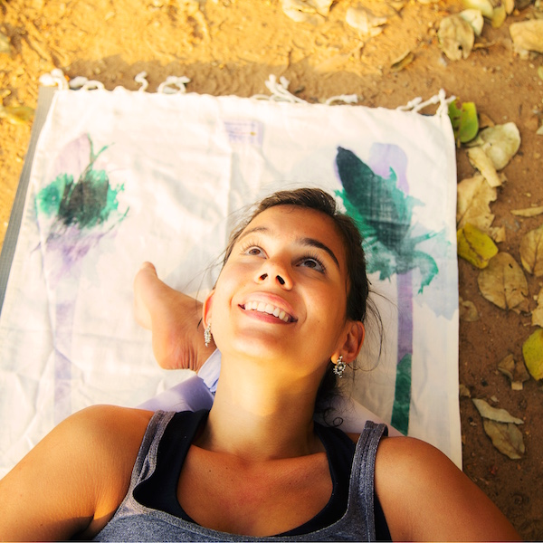
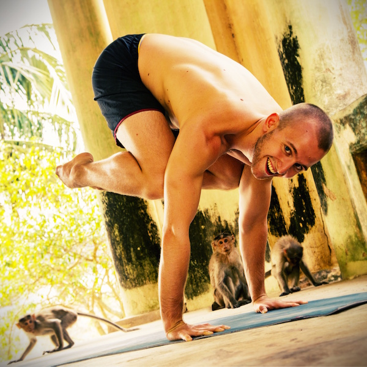

Eloisa Fernandez Iskandar
Urodziłam się i dorastałam w Caracas w Wenezueli. Moja przygoda z praktyką Ashtanga Vinyasa Yoga zaczęła się kiedy miałam 25 lat i od razu się zakochałam, nigdy wcześniej nie praktykowałam nic podobnego. Widząc po raz pierwszy zaawansowanych uczniów i nauczycieli praktykujących jogę, pomyślałam "ok, fajnie .. ale ja nigdy nie będę w stanie robić pozycji jak oni, ale spróbuję i dam z siebie wszystko". Po pewnym czasie, zaobserwowałam, że poprzez stałą praktykę jestem w stanie wykonać rzeczy, które wydawały się wcześniej niemożliwe, niektóre szybciej, inne wymagają wiecej czasu. Ashtanga tak mnie oczarowała, że odwiedziłam Indie już dwa razy by studiować z Lino Miele i w głównym ośrodku Ashtangi KPJAYI w Mysore .. i to nie koniec moich wyjazdów, bo wierzę, że najlepsi nauczyciele to ci którzy są też uczniami. Wierzę również, że jeżeli ja byłam w stanie nauczyć się tych wszystkich rzeczy, każdy może się ich nauczyć. Nie mówię tylko o asanach (pozycjach), mam na myśli wszystko co chcemy osiągnąć w tym życiu. To dlatego uczę jogi, aby pomóc każdemu przełamywać ograniczenia swojego umysłu i udowodniać, że poprzez małe kroki każdego dnia, nawet najtrudniejsze rzeczy da się zrobić. Nasza nauka nigdy się nie kończy i do naszego ostatniego dnia, możemy się ciągle zmieniać i rosnąć,

Artur Chruszcz
Zawsze fascynowały mnie dyscypliny łączące umysł i ciało, dlatego przez wiele lat trenowałem sztuki walki. Pare lat temu sytuacja zdrowotna zmusiła mnie do przerwania treningów brazylijskiego jiu jitsu. Szukałem czegoś co da mi podobne uczucie bycia obecnym, flow i wdzięcznego ruchu. Będąc w Brazylii w roku 2013 kolega zabrał mnie na zajęcia Ashtangi w stylu Mysore .. i to było to! Ta metoda ma wszystko czego poszukiwałem. Poprzez wymagająca ale jednocześnie płynną i lekką praktykę fizyczną, skupioną na oddechu, mogłem wreszcie wyciszyć gadanie w głowie. Byłem wkręcony. Od tamtego czasu praktykuję codziennie, poprzez asany nie tylko moje ciało stało się lżejsze i bardziej elastyczne, ale i umysł. Każdego dnia przelewając pot na macie, uczę się jak być milszą, bardziej skromną i obecną osobą.